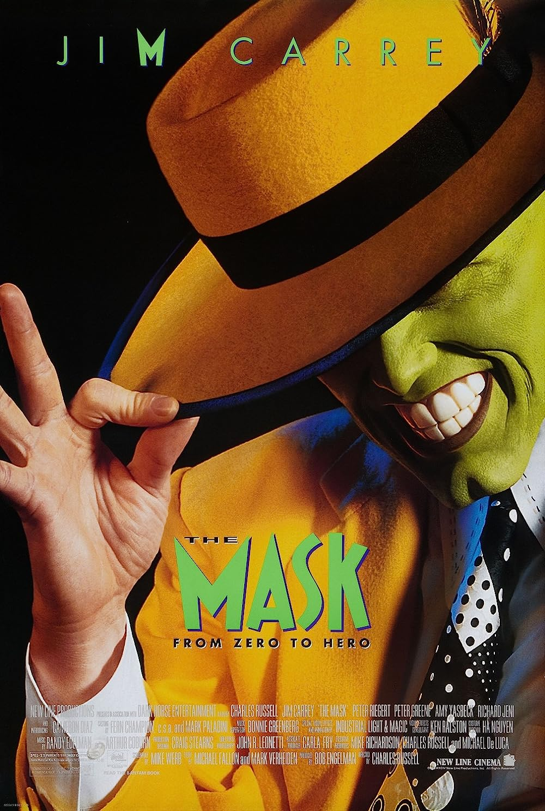
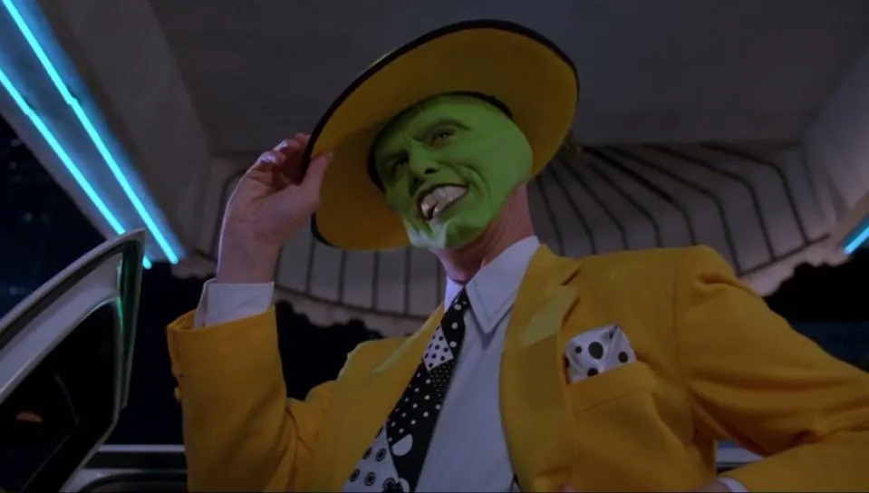
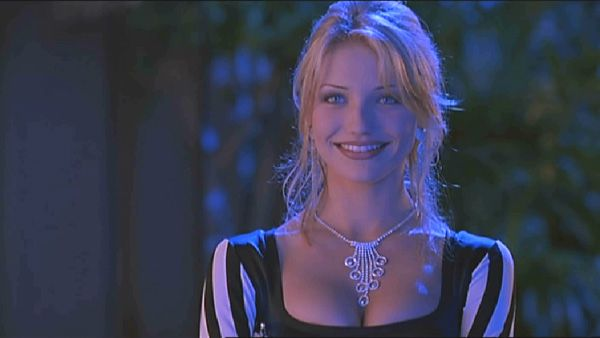
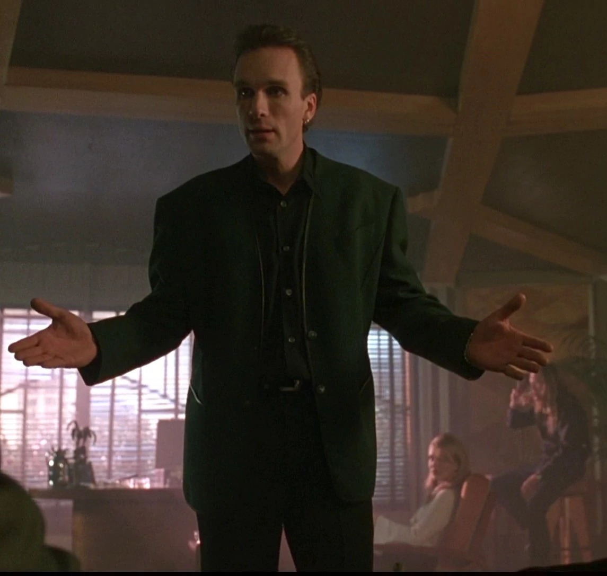

In "The Mask," Stanley Ipkiss, a shy bank guy, finds a whacked-out mask with the spirit of the Norse god Loki. Slap that thing on, and bam! He's a smooth, supercharged dude who catches nightclub singer Tina Carlyle's eye. But, dude, the mask's got a wild side – it turns Ipkiss into a bank-robbing machine, ticking off the local crime boss Dorian Tyrell when his goons get the heat. It's a crazy, mask-fueled rollercoaster!
CharactersStanley Ipkiss Played by: Jim Carrey Tina Carlyle  Played by: Cameron Diaz Dorian Tyrell  Played by: Peter Greene |